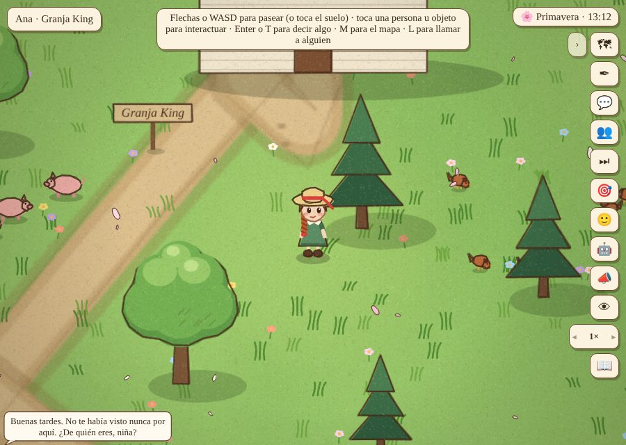
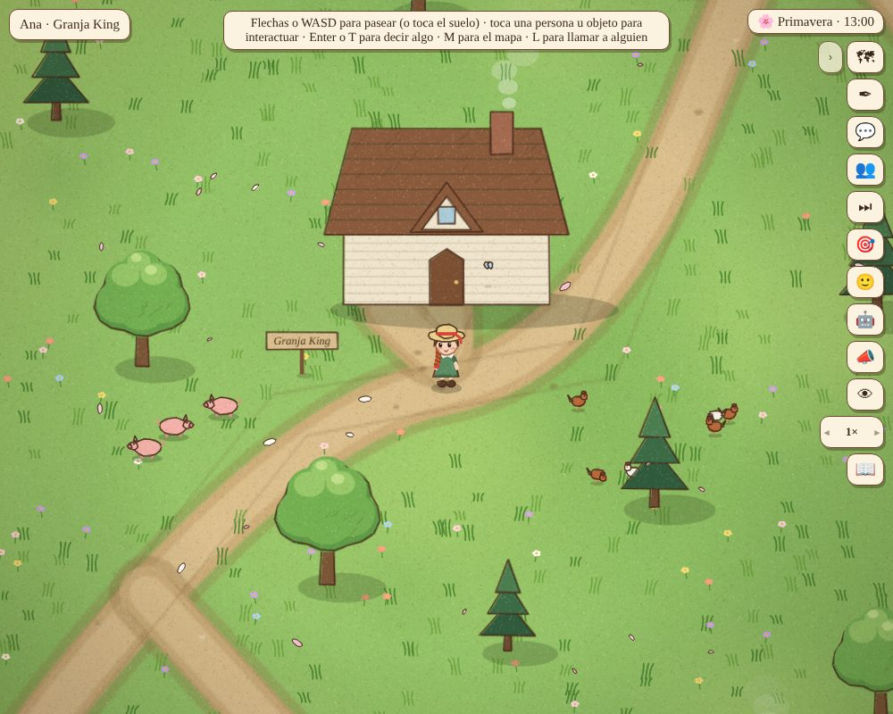
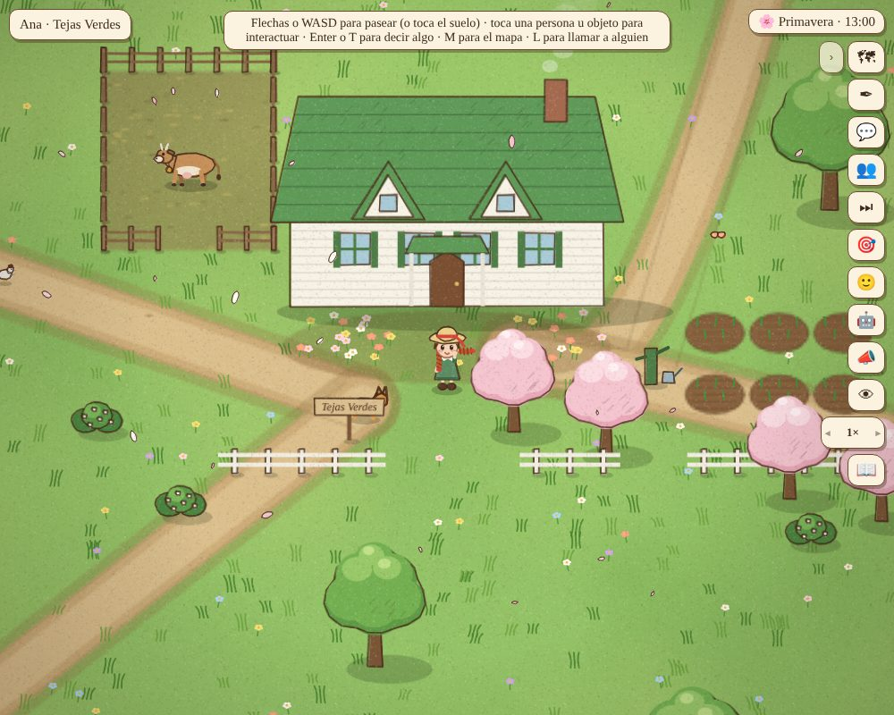
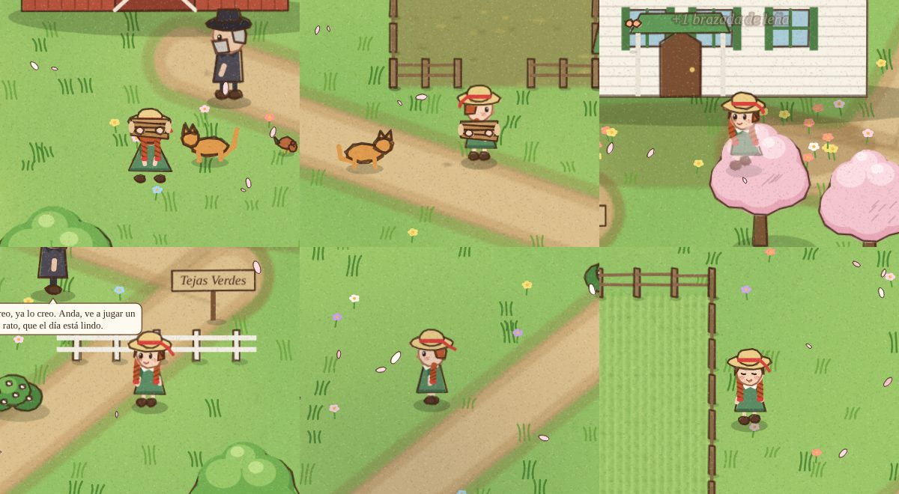
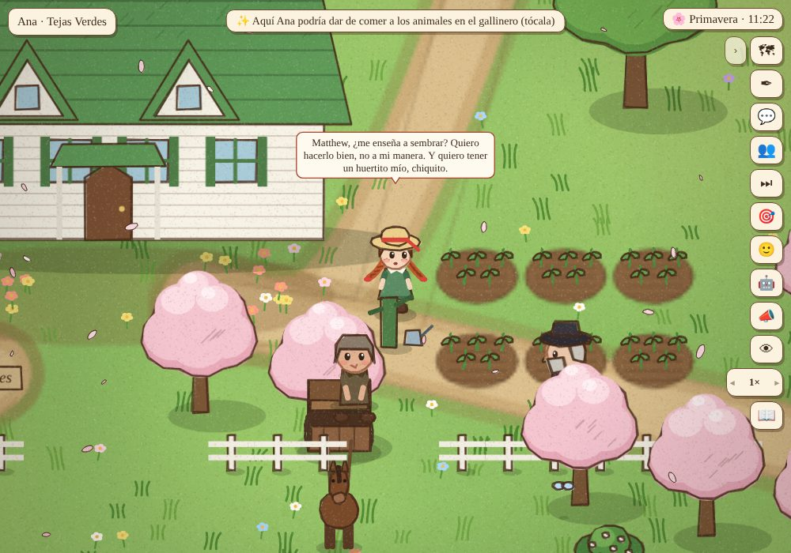
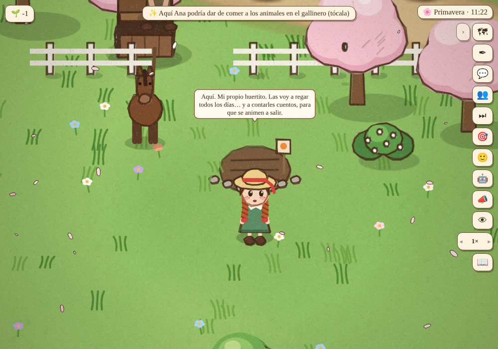
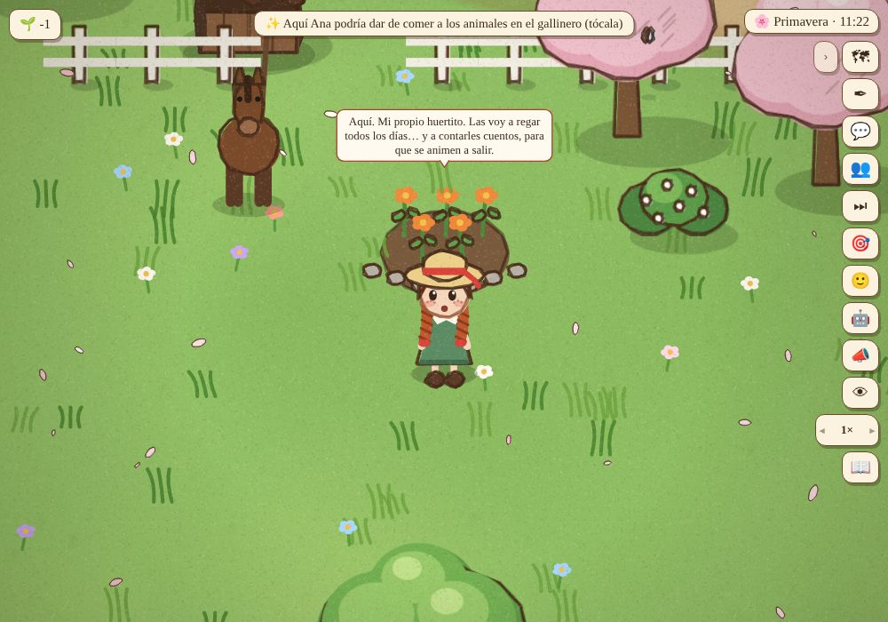

Revisión crítica: que lo que se ve sea verdad, y de una niña de 11 años
Lo que se encontró mirando las animaciones y el mapa con ojo crítico, y la regla general que salió de cada cosa (también en docs/MODELO_INTERACCIONES.md, «Lo que se ve tiene que ser verdad»). ← Partida 9
Lo que pasaba, y la regla
- Ana partía leña con un hacha. Regla: lo de los grandes lo hacen los grandes; un niño hace su versión. Ana entra la leña a la cocina: una brazada a la vez, de la pila del tajo a la caja de la estufa, y se la da a Marilla. Matthew sigue partiendo. En el heno, los niños rastrillan y juntan un fardo (no tres, con horquilla).
- Matthew le enseñaba a sembrar en la cocina (y Marilla a hacer un pastel en cualquier parte). Regla: lo que se hace con las manos se hace donde se hace (
se_hace_en:): si están en otra parte, Matthew dice «eso se aprende en la huerta, con las manos en la tierra. Vamos», y van juntos; empieza al llegar los dos.tools/grafo.jsavisa de cualquier conversación con surcos, harina, ordeñar… que no diga dónde. - Las flores crecían en 25 segundos después de regarlas, y las bayas volvían a los quince minutos. Regla: lo que crece, crece de noche, y despacio: solo si se regó ese día, unas dos semanas de semilla a flor (3 noches regadas para que asome, 7 para las hojas, 12 para las flores). Cortar flores deja la planta con hojas, no en semilla.
- El huertito de Ana: al terminar la lección, Matthew le da un sobrecito de capuchinas («para tu huertito… donde tú quieras»). Tocando a Ana: «🌱 Hacer mi huertito aquí», en cualquier pedazo de pasto (no en un camino, ni contra una casa, un cerco o el agua). Tocando el huertito, cómo va: «Todavía no sale nada: las semillas duermen bajo la tierra».
- Casas en medio de la calle: seis caminos del mapa pasaban por debajo de una casa (Tejas Verdes, la Sra. Lynde, el Sr. Harrison, la escuela, la granja King, los Blythe). Regla: ningún camino atraviesa una casa: todo tramo que la cruza la rodea por el lado más corto, y el camino a la puerta sale del frente.
- Los carros pasaban muy rápido, a punto de atropellar a la gente. Regla: un carro va al paso del caballo (casi como quien camina) y se detiene ante quien esté en el camino justo delante: los grandes se hacen a un lado; a Ana la espera (en la prueba, se detuvo a 89 pasos de ella y esperó).






